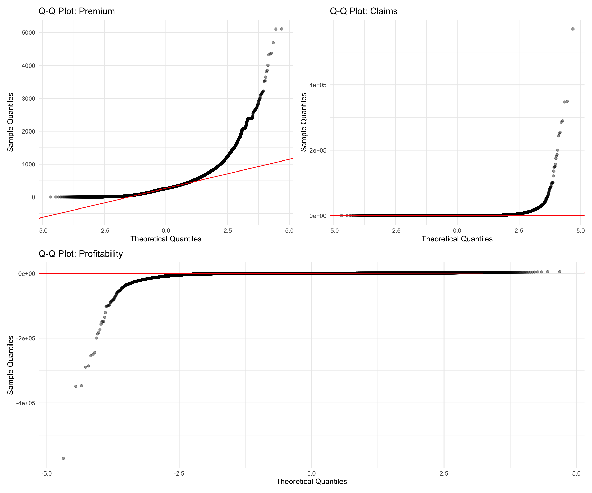
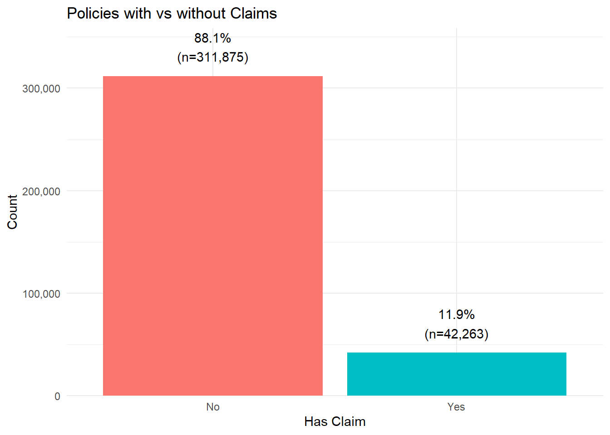
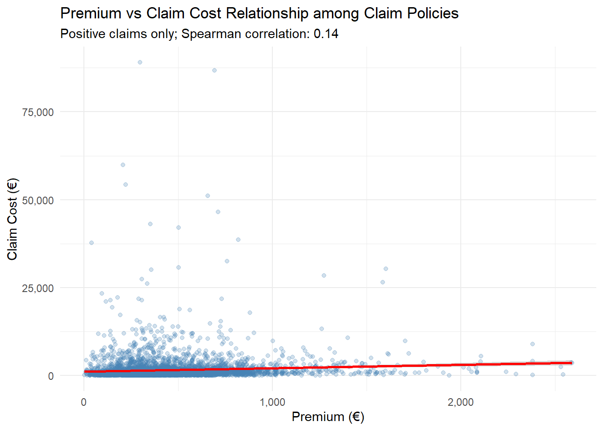
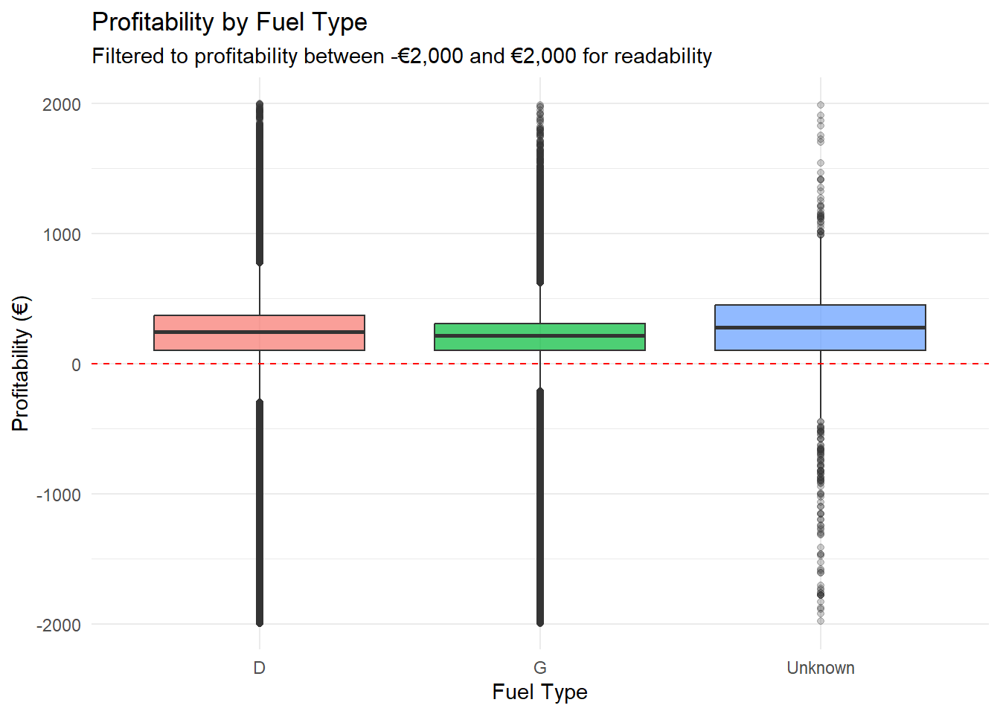
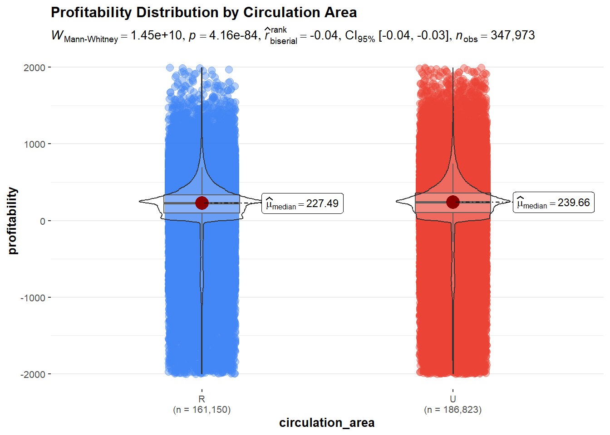
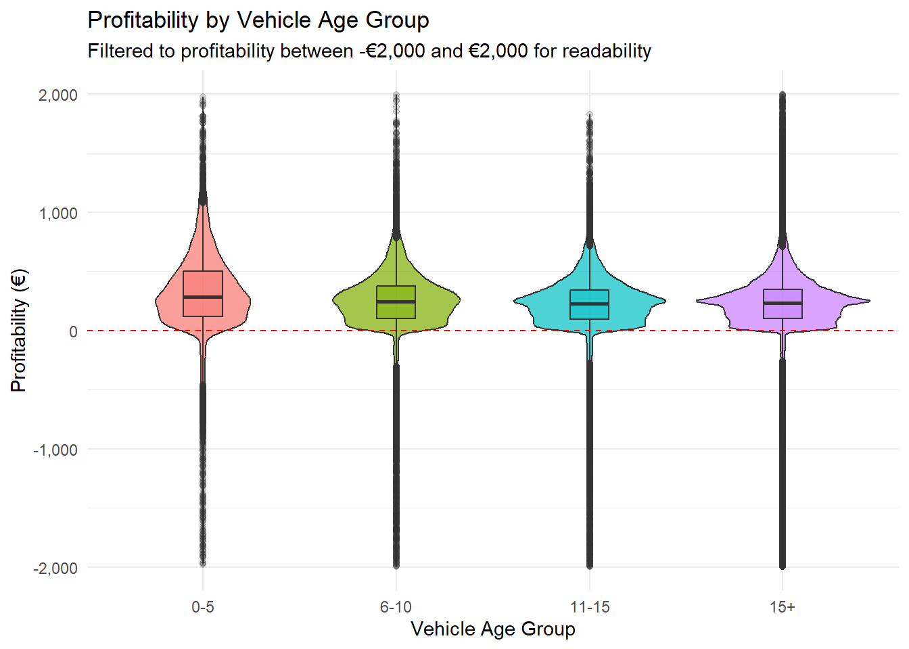

pacman::p_load(tidyverse, ggplot2, readxl, skimr, patchwork, ggstatsplot, ggdist, ggridges, scales, viridis)Take-home Exercise 1 (Technical Report)
Overview
This assignment focuses on analyzing a real-world motor vehicle insurance portfolio dataset from a Spanish insurance company using visual analytics techniques.
View Full Assignment Requirements
Quick Summary
- Data: Motor insurance portfolio dataset (Spanish insurance company)
- Tasks: Univariate and bivariate visual analytics
- Tools: tidyverse, ggplot2 and extensions
- Due Date: 24th May 2026, 11:59pm
Loading Packages
Data Preparation
Import Data
insurance_data <- read.csv(
"../../data/Dataset of motor insurance portfolio.csv",
sep = ";",
dec = "."
)
variable_desc <- read_excel("../../data/Descriptive of variables.xlsx")Data Exploration
glimpse(insurance_data)Rows: 354,140
Columns: 47
$ insured_id <int> 1, 2, 2, 2, 3, 3, 3, 4, 4, 4, 5, 5, 5, 6, …
$ year <int> 2022, 2022, 2023, 2024, 2022, 2023, 2024, …
$ policy_type <chr> "COMP_E", "COMP_E", "COMP_E", "COMP_E", "C…
$ policy_status <chr> "C", "A", "A", "A", "A", "A", "A", "A", "A…
$ business_type <chr> "NB", "P", "P", "P", "NB", "P", "P", "NB",…
$ payment_frequency <chr> "A", "A", "A", "A", "S", "S", "S", "A", "A…
$ bonus_score <chr> "G", "G", "G", "G", "G", "G", "G", "G", "G…
$ driver_age <int> 48, 43, 44, 45, 45, 46, 47, 32, 33, 34, 39…
$ vehicle_age <int> 22, 24, 25, 26, 26, 27, 28, 12, 13, 14, 20…
$ age_driving_licence <int> 26, 19, 19, 18, 19, 19, 19, 19, 19, 19, 19…
$ fuel_type <chr> "G", "D", "D", "D", "D", "D", "D", "D", "D…
$ vehicle_value <dbl> 149511.44, 65065.12, 65065.12, 65065.12, 5…
$ seats <int> 4, 8, 8, 8, 7, 7, 7, 5, 5, 5, 5, 5, 5, 5, …
$ power_to_weight_ratio <dbl> 3.92, 10.15, 10.15, 10.15, 9.19, 9.19, 9.1…
$ vehicle_brand <chr> "PORSCHE", "MERCEDES", "MERCEDES", "MERCED…
$ municipality_type <chr> "I", "I", "I", "I", "I", "I", "I", "I", "I…
$ circulation_area <chr> "U", "U", "U", "U", "R", "R", "R", "R", "R…
$ total_premium <dbl> 279.5576, 546.6234, 548.7526, 584.6324, 68…
$ liability_premium <dbl> 30.60232, 114.33336, 110.66689, 122.09253,…
$ property_damage_premium <dbl> 121.9127, 303.1060, 304.9560, 305.2251, 35…
$ theft_premium <dbl> 112.361489, 80.784824, 83.521384, 107.8868…
$ fire_premium <dbl> 3.832441, 7.826861, 6.151465, 5.842892, 7.…
$ glass_premium <dbl> 8.305788, 30.091751, 32.861626, 31.101584,…
$ legal_protection_premium <dbl> 2.043622, 7.812747, 7.655637, 10.084173, 6…
$ occupants_premium <dbl> 0.4992053, 2.6679084, 2.9395659, 2.3992827…
$ total_claims <int> 0, 0, 1, 2, 0, 0, 0, 0, 0, 0, 0, 0, 0, 5, …
$ liability_claims <int> 0, 0, 1, 1, 0, 0, 0, 0, 0, 0, 0, 0, 0, 0, …
$ liability_property_claims <int> 0, 0, 1, 1, 0, 0, 0, 0, 0, 0, 0, 0, 0, 0, …
$ liability_injury_claims <int> 0, 0, 0, 0, 0, 0, 0, 0, 0, 0, 0, 0, 0, 0, …
$ property_claims <int> 0, 0, 0, 1, 0, 0, 0, 0, 0, 0, 0, 0, 0, 5, …
$ theft_claims <int> 0, 0, 0, 0, 0, 0, 0, 0, 0, 0, 0, 0, 0, 0, …
$ fire_claims <int> 0, 0, 0, 0, 0, 0, 0, 0, 0, 0, 0, 0, 0, 0, …
$ glass_claims <int> 0, 0, 0, 0, 0, 0, 0, 0, 0, 0, 0, 0, 0, 0, …
$ legal_protection_claims <int> 0, 0, 0, 0, 0, 0, 0, 0, 0, 0, 0, 0, 0, 0, …
$ occupants_claims <int> 0, 0, 0, 0, 0, 0, 0, 0, 0, 0, 0, 0, 0, 0, …
$ total_incurred <dbl> 0.000, 0.000, 233.013, 2586.361, 0.000, 0.…
$ liability_incurred <dbl> 0.000, 0.000, 233.013, 1035.000, 0.000, 0.…
$ liability_property_incurred <dbl> 0.000, 0.000, 233.013, 1035.000, 0.000, 0.…
$ liability_injury_incurred <dbl> 0.000, 0.000, 0.000, 0.000, 0.000, 0.000, …
$ property_incurred <dbl> 0.000, 0.000, 0.000, 1551.361, 0.000, 0.00…
$ theft_incurred <dbl> 0, 0, 0, 0, 0, 0, 0, 0, 0, 0, 0, 0, 0, 0, …
$ fire_incurred <dbl> 0, 0, 0, 0, 0, 0, 0, 0, 0, 0, 0, 0, 0, 0, …
$ glass_incurred <dbl> 0, 0, 0, 0, 0, 0, 0, 0, 0, 0, 0, 0, 0, 0, …
$ legal_protection_incurred <dbl> 0, 0, 0, 0, 0, 0, 0, 0, 0, 0, 0, 0, 0, 0, …
$ occupants_incurred <dbl> 0, 0, 0, 0, 0, 0, 0, 0, 0, 0, 0, 0, 0, 0, …
$ total_exposure <dbl> 0.09863014, 1.00000000, 1.00000000, 1.0000…
$ liability_exposure <dbl> 0.09863014, 1.00000000, 1.00000000, 1.0000…skim(insurance_data)| Name | insurance_data |
| Number of rows | 354140 |
| Number of columns | 47 |
| _______________________ | |
| Column type frequency: | |
| character | 9 |
| numeric | 38 |
| ________________________ | |
| Group variables | None |
Variable type: character
| skim_variable | n_missing | complete_rate | min | max | empty | n_unique | whitespace |
|---|---|---|---|---|---|---|---|
| policy_type | 0 | 1 | 2 | 6 | 0 | 5 | 0 |
| policy_status | 0 | 1 | 1 | 1 | 0 | 2 | 0 |
| business_type | 0 | 1 | 1 | 2 | 0 | 2 | 0 |
| payment_frequency | 0 | 1 | 1 | 1 | 0 | 3 | 0 |
| bonus_score | 0 | 1 | 1 | 1 | 0 | 3 | 0 |
| fuel_type | 1287 | 1 | 1 | 1 | 0 | 2 | 0 |
| vehicle_brand | 0 | 1 | 2 | 12 | 0 | 68 | 0 |
| municipality_type | 0 | 1 | 1 | 2 | 0 | 3 | 0 |
| circulation_area | 0 | 1 | 1 | 1 | 0 | 2 | 0 |
Variable type: numeric
| skim_variable | n_missing | complete_rate | mean | sd | p0 | p25 | p50 | p75 | p100 | hist |
|---|---|---|---|---|---|---|---|---|---|---|
| insured_id | 0 | 1 | 76044.50 | 51272.26 | 1.00 | 33342.00 | 66840.00 | 112949.00 | 185678.00 | ▇▇▆▃▃ |
| year | 0 | 1 | 2023.29 | 0.76 | 2022.00 | 2023.00 | 2023.00 | 2024.00 | 2024.00 | ▃▁▆▁▇ |
| driver_age | 0 | 1 | 49.01 | 12.07 | 18.00 | 39.00 | 48.00 | 58.00 | 90.00 | ▂▇▇▃▁ |
| vehicle_age | 2 | 1 | 25.92 | 11.62 | 0.00 | 17.00 | 25.00 | 35.00 | 68.00 | ▃▇▆▂▁ |
| age_driving_licence | 2 | 1 | 22.99 | 6.36 | 0.00 | 19.00 | 20.00 | 25.00 | 80.00 | ▁▇▁▁▁ |
| vehicle_value | 513 | 1 | 26977.44 | 12326.09 | 1630.12 | 18607.58 | 24729.60 | 32252.32 | 374034.21 | ▇▁▁▁▁ |
| seats | 0 | 1 | 5.08 | 0.76 | 2.00 | 5.00 | 5.00 | 5.00 | 9.00 | ▁▁▇▁▁ |
| power_to_weight_ratio | 0 | 1 | 12.33 | 2.48 | 0.00 | 10.74 | 12.05 | 13.73 | 64.81 | ▇▅▁▁▁ |
| total_premium | 0 | 1 | 296.72 | 227.85 | 0.00 | 146.14 | 257.90 | 384.98 | 5107.64 | ▇▁▁▁▁ |
| liability_premium | 0 | 1 | 180.71 | 129.72 | 0.00 | 92.52 | 165.78 | 237.83 | 2320.77 | ▇▁▁▁▁ |
| property_damage_premium | 0 | 1 | 73.52 | 155.80 | 0.00 | 0.00 | 0.00 | 83.62 | 3736.73 | ▇▁▁▁▁ |
| theft_premium | 0 | 1 | 11.25 | 18.99 | 0.00 | 1.81 | 5.90 | 13.52 | 1047.04 | ▇▁▁▁▁ |
| fire_premium | 0 | 1 | 1.51 | 2.25 | 0.00 | 0.29 | 0.86 | 1.82 | 72.09 | ▇▁▁▁▁ |
| glass_premium | 0 | 1 | 19.50 | 16.93 | 0.00 | 7.42 | 15.39 | 26.91 | 387.61 | ▇▁▁▁▁ |
| legal_protection_premium | 0 | 1 | 8.27 | 6.04 | 0.00 | 3.82 | 7.26 | 10.97 | 175.06 | ▇▁▁▁▁ |
| occupants_premium | 0 | 1 | 1.97 | 1.32 | 0.00 | 0.94 | 1.83 | 2.62 | 68.65 | ▇▁▁▁▁ |
| total_claims | 0 | 1 | 0.22 | 0.66 | 0.00 | 0.00 | 0.00 | 0.00 | 18.00 | ▇▁▁▁▁ |
| liability_claims | 0 | 1 | 0.11 | 0.38 | 0.00 | 0.00 | 0.00 | 0.00 | 8.00 | ▇▁▁▁▁ |
| liability_property_claims | 0 | 1 | 0.09 | 0.32 | 0.00 | 0.00 | 0.00 | 0.00 | 8.00 | ▇▁▁▁▁ |
| liability_injury_claims | 0 | 1 | 0.01 | 0.12 | 0.00 | 0.00 | 0.00 | 0.00 | 3.00 | ▇▁▁▁▁ |
| property_claims | 0 | 1 | 0.06 | 0.42 | 0.00 | 0.00 | 0.00 | 0.00 | 15.00 | ▇▁▁▁▁ |
| theft_claims | 0 | 1 | 0.01 | 0.07 | 0.00 | 0.00 | 0.00 | 0.00 | 2.00 | ▇▁▁▁▁ |
| fire_claims | 0 | 1 | 0.00 | 0.02 | 0.00 | 0.00 | 0.00 | 0.00 | 1.00 | ▇▁▁▁▁ |
| glass_claims | 0 | 1 | 0.03 | 0.18 | 0.00 | 0.00 | 0.00 | 0.00 | 3.00 | ▇▁▁▁▁ |
| legal_protection_claims | 0 | 1 | 0.01 | 0.10 | 0.00 | 0.00 | 0.00 | 0.00 | 2.00 | ▇▁▁▁▁ |
| occupants_claims | 0 | 1 | 0.00 | 0.01 | 0.00 | 0.00 | 0.00 | 0.00 | 1.00 | ▇▁▁▁▁ |
| total_incurred | 0 | 1 | 208.58 | 2274.71 | 0.00 | 0.00 | 0.00 | 0.00 | 571128.32 | ▇▁▁▁▁ |
| liability_incurred | 0 | 1 | 133.71 | 2120.43 | 0.00 | 0.00 | 0.00 | 0.00 | 561759.79 | ▇▁▁▁▁ |
| liability_property_incurred | 0 | 1 | 65.74 | 406.86 | 0.00 | 0.00 | 0.00 | 0.00 | 34553.88 | ▇▁▁▁▁ |
| liability_injury_incurred | 0 | 1 | 67.96 | 2031.21 | 0.00 | 0.00 | 0.00 | 0.00 | 560025.59 | ▇▁▁▁▁ |
| property_incurred | 0 | 1 | 52.66 | 420.99 | 0.00 | 0.00 | 0.00 | 0.00 | 27542.43 | ▇▁▁▁▁ |
| theft_incurred | 0 | 1 | 4.51 | 193.74 | 0.00 | 0.00 | 0.00 | 0.00 | 40324.89 | ▇▁▁▁▁ |
| fire_incurred | 0 | 1 | 0.76 | 82.03 | 0.00 | 0.00 | 0.00 | 0.00 | 28267.13 | ▇▁▁▁▁ |
| glass_incurred | 0 | 1 | 12.59 | 83.80 | 0.00 | 0.00 | 0.00 | 0.00 | 4533.40 | ▇▁▁▁▁ |
| legal_protection_incurred | 0 | 1 | 3.32 | 59.97 | 0.00 | 0.00 | 0.00 | 0.00 | 9889.85 | ▇▁▁▁▁ |
| occupants_incurred | 0 | 1 | 1.01 | 201.06 | 0.00 | 0.00 | 0.00 | 0.00 | 69000.00 | ▇▁▁▁▁ |
| total_exposure | 0 | 1 | 0.71 | 0.33 | 0.00 | 0.44 | 0.84 | 1.00 | 1.00 | ▂▂▂▂▇ |
| liability_exposure | 0 | 1 | 0.71 | 0.33 | 0.00 | 0.44 | 0.84 | 1.00 | 1.00 | ▂▂▂▂▇ |
Data Cleaning and Feature Engineering
Missing Value Treatment:
fuel_type: 1,287 missing values (0.2%) recoded as “Unknown” to preserve records and make missing data visibleage_driving_licence: 2 missing values (<0.001%) removed due to negligible impactvehicle_value: 513 missing values (0.08%) kept as NA; filtered out when analyzing vehicle value relationships
insurance_clean <- insurance_data %>%
mutate(
fuel_type = replace_na(fuel_type, "Unknown"),
profitability = total_premium - total_incurred,
profit_ratio = ifelse(total_premium > 0, profitability / total_premium, NA),
has_claim = ifelse(total_incurred > 0, "Yes", "No"),
vehicle_age_group = cut(vehicle_age, breaks = c(0, 5, 10, 15, 100),
labels = c("0-5", "6-10", "11-15", "15+")),
driver_age_group = cut(driver_age, breaks = c(18, 30, 45, 60, 100),
labels = c("18-30", "31-45", "46-60", "60+"))
) %>%
filter(!is.na(profitability), !is.na(age_driving_licence))
cat("Original records:", nrow(insurance_data), "\n")Original records: 354140 cat("After cleaning:", nrow(insurance_clean), "\n")After cleaning: 354138 cat("Records removed:", nrow(insurance_data) - nrow(insurance_clean), "\n")Records removed: 2 Distribution Assessment and Statistical Test Selection
Before conducting statistical tests, we assess the normality of key numerical variables to determine whether parametric or non-parametric tests are appropriate.
Q-Q Plots for Normality Assessment
p_qq1 <- ggplot(insurance_clean, aes(sample = total_premium)) +
stat_qq(alpha = 0.4) +
stat_qq_line(color = "red") +
labs(
title = "Q-Q Plot: Premium",
x = "Theoretical Quantiles",
y = "Sample Quantiles"
) +
theme_minimal()
p_qq2 <- ggplot(insurance_clean, aes(sample = total_incurred)) +
stat_qq(alpha = 0.4) +
stat_qq_line(color = "red") +
labs(
title = "Q-Q Plot: Claims",
x = "Theoretical Quantiles",
y = "Sample Quantiles"
) +
theme_minimal()
p_qq3 <- ggplot(insurance_clean, aes(sample = profitability)) +
stat_qq(alpha = 0.4) +
stat_qq_line(color = "red") +
labs(
title = "Q-Q Plot: Profitability",
x = "Theoretical Quantiles",
y = "Sample Quantiles"
) +
theme_minimal()
(p_qq1 | p_qq2) / p_qq3
Interpretation: The Q-Q plots show clear deviations from the theoretical normal line for all three variables. total_premium displays right-skewness, while total_incurred has a very heavy right tail due to large claim observations. profitability shows strong left-tail deviation, suggesting the presence of extreme negative profitability cases. Therefore, the normality assumption is not satisfied, and non-parametric tests such as the Mann-Whitney U test and Kruskal-Wallis test are more appropriate for subsequent group comparisons.
Visual Analytics Approach
This analysis employs a systematic visual analytics strategy to explore the insurance portfolio data:
Univariate Analysis:
- Histograms with density curves to reveal distribution shapes, identify skewness, and detect multimodality
- Boxplots to identify outliers, visualize quartile ranges, and assess data spread
- Log transformations to demonstrate data transformation techniques for handling skewed distributions and to show how transformations affect interpretability
Bivariate Analysis:
- Scatter plots with correlation coefficients to assess the strength and direction of relationships between continuous variables
- Grouped bar charts to compare mean values across categorical groups
- Ridgeline plots (from ggridges package) to compare full distributions across multiple groups simultaneously, showing both central tendency and spread
- Raincloud plots (from ggdist package) to combine density curves, boxplots, and individual data points in a single visualization, providing comprehensive distributional information
- Error bar plots with confidence intervals to quantify uncertainty in estimates and enable visual assessment of statistical significance
Statistical Validation:
- ggbetweenstats (from ggstatsplot package) to combine visualization with statistical testing, providing p-values, effect sizes, and pairwise comparisons in a single plot
- Non-parametric tests (Kruskal-Wallis, Mann-Whitney) chosen based on Q-Q plot assessment showing non-normal distributions
This multi-layered approach ensures that findings are both visually interpretable and statistically validated, supporting evidence-based recommendations for portfolio management.
Analysis
Part 1: Univariate Visual Analytics
Numerical Variables
Distribution of Premium
p1 <- ggplot(insurance_clean, aes(x = total_premium)) +
geom_histogram(aes(y = after_stat(density)),
bins = 50, fill = "steelblue", alpha = 0.7) +
geom_density(color = "red", linewidth = 1) +
scale_x_continuous(labels = comma) +
labs(
title = "Distribution of Premium",
x = "Premium (€)",
y = "Density"
) +
theme_minimal()
p2 <- ggplot(insurance_clean, aes(y = total_premium)) +
geom_boxplot(fill = "steelblue", alpha = 0.7) +
scale_y_continuous(labels = comma) +
coord_flip() +
labs(
title = "Boxplot of Premium",
x = NULL,
y = "Premium (€)"
) +
theme_minimal()
p1 / p2
The distribution of total premium is right-skewed, with most policies having relatively low premium values. The histogram shows that the majority of observations are concentrated below €500, while a small number of policies have much higher premiums, extending beyond €5,000. The boxplot confirms the presence of several upper-tail outliers. Therefore, the premium variable is not normally distributed and may require transformation or non-parametric methods in later analysis.
ggplot(insurance_clean, aes(x = log1p(total_premium))) +
geom_histogram(aes(y = after_stat(density)),
bins = 50, fill = "steelblue", alpha = 0.7) +
geom_density(color = "red", linewidth = 1) +
labs(
title = "Distribution of Premium after Log Transformation",
x = "log(1 + Premium)",
y = "Density"
) +
theme_minimal()
Distribution of Claims
p3 <- ggplot(insurance_clean, aes(x = total_incurred)) +
geom_histogram(aes(y = after_stat(density)), bins = 50, fill = "coral", alpha = 0.7) +
geom_density(color = "darkred", linewidth = 1) +
scale_x_continuous(labels = comma) +
labs(title = "Distribution of Claim Costs", x = "Claim Cost (€)", y = "Density") +
theme_minimal()
p4 <- ggplot(insurance_clean, aes(x = total_incurred)) +
geom_boxplot(fill = "coral", alpha = 0.7) +
scale_x_continuous(labels = comma) +
labs(title = "Boxplot of Claim Costs", x = "Claim Cost (€)") +
theme_minimal()
p3 / p4
The distribution of total incurred claim costs is extremely right-skewed. Most policies have very low or zero claim costs, while a small number of observations have exceptionally large claim amounts, reaching nearly €600,000. The boxplot confirms the presence of many upper-tail outliers. This pattern is common in insurance data, where most policyholders do not make large claims, but a few severe claims can significantly affect the overall distribution. Therefore, the variable is not normally distributed, and log transformation or non-parametric methods may be more appropriate for further analysis.
insurance_clean <- insurance_clean %>%
mutate(log_total_incurred = log1p(total_incurred))
p3_log <- ggplot(insurance_clean, aes(x = log_total_incurred)) +
geom_histogram(aes(y = after_stat(density)),
bins = 50, fill = "coral", alpha = 0.7) +
geom_density(color = "darkred", linewidth = 1) +
labs(
title = "Distribution of Claim Costs after Log Transformation",
x = "log(1 + Claim Cost)",
y = "Density"
) +
theme_minimal()
p4_log <- ggplot(insurance_clean, aes(y = log_total_incurred)) +
geom_boxplot(fill = "coral", alpha = 0.7) +
coord_flip() +
labs(
title = "Boxplot of Claim Costs after Log Transformation",
x = NULL,
y = "log(1 + Claim Cost)"
) +
theme_minimal()
p3_log / p4_log
After applying the log transformation, the distribution of claim costs becomes easier to inspect, but a large spike remains at zero. This indicates that many policies have no incurred claims. Among policies with positive claim costs, the distribution is still right-skewed, although the log transformation reduces the influence of extreme claim values.
claims_positive <- insurance_clean %>%
filter(total_incurred > 0) %>%
mutate(log_total_incurred = log(total_incurred))
p3_log_positive <- ggplot(claims_positive, aes(x = log_total_incurred)) +
geom_histogram(aes(y = after_stat(density)),
bins = 50, fill = "coral", alpha = 0.7) +
geom_density(color = "darkred", linewidth = 1) +
labs(
title = "Distribution of Positive Claim Costs after Log Transformation",
subtitle = "Only policies with total incurred claims greater than zero are included",
x = "log(Claim Cost)",
y = "Density"
) +
theme_minimal()
p4_log_positive <- ggplot(claims_positive, aes(y = log_total_incurred)) +
geom_boxplot(fill = "coral", alpha = 0.7) +
coord_flip() +
labs(
title = "Boxplot of Positive Claim Costs after Log Transformation",
x = NULL,
y = "log(Claim Cost)"
) +
theme_minimal()
p3_log_positive / p4_log_positive
Distribution of Profitability
p5 <- ggplot(insurance_clean, aes(x = profitability)) +
geom_histogram(aes(y = after_stat(density)),
bins = 50, fill = "forestgreen", alpha = 0.7) +
geom_density(color = "darkgreen", linewidth = 1) +
geom_vline(xintercept = 0, linetype = "dashed", color = "red") +
scale_x_continuous(labels = comma) +
labs(
title = "Distribution of Profitability",
subtitle = "Profitability = Premium - Claims",
x = "Profitability (€)",
y = "Density"
) +
theme_minimal()
p6 <- ggplot(insurance_clean, aes(y = profitability)) +
geom_boxplot(fill = "forestgreen", alpha = 0.7) +
geom_hline(yintercept = 0, linetype = "dashed", color = "red") +
scale_y_continuous(labels = comma) +
coord_flip() +
labs(
title = "Boxplot of Profitability",
x = NULL,
y = "Profitability (€)"
) +
theme_minimal()
p5 / p6
Profitability, defined as total premium minus total incurred claims, shows a highly left-skewed distribution. Most policies have profitability close to zero or moderately positive, while a small number of policies generate very large losses due to high claim costs. The vertical dashed line at zero separates profitable and loss-making policies. The long negative tail indicates that claim severity has a strong impact on insurer profitability. Therefore, profitability is not normally distributed, and non-parametric methods or transformed visualizations are more appropriate for further analysis.
insurance_clean <- insurance_clean %>%
mutate(signed_log_profitability = sign(profitability) * log1p(abs(profitability)))
ggplot(insurance_clean, aes(x = signed_log_profitability)) +
geom_histogram(aes(y = after_stat(density)),
bins = 50, fill = "forestgreen", alpha = 0.7) +
geom_density(color = "darkgreen", linewidth = 1) +
geom_vline(xintercept = 0, linetype = "dashed", color = "red") +
labs(
title = "Distribution of Profitability after Signed Log Transformation",
x = "sign(profitability) × log(1 + |profitability|)",
y = "Density"
) +
theme_minimal()
The transformed distribution shows two distinct regions: a large cluster of profitable policies and a smaller group of loss-making policies. Most observations are concentrated on the positive side of zero, while the negative tail indicates policies where incurred claims exceed premiums. This confirms that profitability is not normally distributed and supports the use of non-parametric methods in subsequent analyses.
Ridgeline Plot: Profitability by Fuel Type
library(ggridges)
library(scales)
insurance_clean %>%
ggplot(aes(x = profitability, y = fuel_type, fill = fuel_type)) +
geom_density_ridges(scale = 0.9, alpha = 0.7) +
scale_x_continuous(labels = comma) +
coord_cartesian(xlim = c(-2000, 2000)) +
labs(
title = "Profitability Distribution by Fuel Type",
subtitle = "Ridgeline plot showing distribution overlap and differences",
x = "Profitability (€)",
y = "Fuel Type"
) +
theme_minimal() +
theme(legend.position = "none")
The ridgeline plot compares the profitability distributions across different fuel types. Overall, the distributions largely overlap, suggesting that profitability patterns are broadly similar across fuel categories. Most policies are concentrated around slightly positive profitability values, while each fuel type also shows some negative-profitability cases. Diesel and gasoline vehicles appear to have similar central distributions, while the unknown fuel type shows a wider spread, indicating greater variability. However, this should be interpreted carefully because the unknown category may represent incomplete or less consistent records.
The below plot is restricted to the central profitability range to improve readability because extreme loss values distort the density estimation.
library(ggridges)
library(scales)
library(dplyr)
insurance_clean %>%
filter(profitability >= -2000, profitability <= 2000) %>%
ggplot(aes(x = profitability, y = fuel_type, fill = fuel_type)) +
geom_density_ridges(scale = 0.9, alpha = 0.7, rel_min_height = 0.01) +
scale_x_continuous(labels = comma) +
labs(
title = "Profitability Distribution by Fuel Type",
subtitle = "Zoomed view: profitability between -€2,000 and €2,000",
x = "Profitability (€)",
y = "Fuel Type"
) +
theme_minimal() +
theme(legend.position = "none")
Categorical Variables
Fuel Type Distribution
insurance_clean %>%
count(fuel_type) %>%
mutate(pct = n / sum(n) * 100) %>%
ggplot(aes(x = reorder(fuel_type, n), y = n, fill = fuel_type)) +
geom_col() +
geom_text(
aes(label = paste0(round(pct, 1), "%")),
hjust = -0.1
) +
coord_flip() +
scale_y_continuous(
labels = comma,
expand = expansion(mult = c(0, 0.15))
) +
labs(
title = "Distribution of Fuel Types",
x = "Fuel Type",
y = "Count"
) +
theme_minimal() +
theme(legend.position = "none")
The fuel type distribution is highly imbalanced. Diesel vehicles account for the majority of the portfolio, representing around 63.9% of policies, followed by gasoline vehicles at 35.7%. The Unknown category is very small, accounting for only 0.4% of the data. This suggests that most insured vehicles in the portfolio are either diesel or gasoline, while missing or unclassified fuel types are rare.
Geographic Distribution
insurance_clean %>%
count(circulation_area) %>%
mutate(pct = n / sum(n) * 100) %>%
ggplot(aes(x = reorder(circulation_area, n), y = n, fill = circulation_area)) +
geom_col() +
geom_text(
aes(label = paste0(round(pct, 1), "%")),
hjust = -0.1
) +
coord_flip() +
scale_y_continuous(
labels = comma,
expand = expansion(mult = c(0, 0.15))
) +
labs(
title = "Distribution by Circulation Area",
x = "Area",
y = "Count"
) +
theme_minimal() +
theme(legend.position = "none")
Area U is slightly more common, but both R and U have substantial sample sizes.
Claims Occurrence
insurance_clean %>%
count(has_claim) %>%
mutate(pct = n / sum(n) * 100) %>%
ggplot(aes(x = has_claim, y = n, fill = has_claim)) +
geom_col() +
geom_text(
aes(label = paste0(round(pct, 1), "%\n(n=", scales::comma(n), ")")),
vjust = -0.5
) +
labs(
title = "Policies with vs without Claims",
x = "Has Claim",
y = "Count"
) +
scale_y_continuous(
labels = comma,
expand = expansion(mult = c(0, 0.15))
) +
theme_minimal() +
theme(legend.position = "none")
Most policies in the portfolio do not have any claims. Around 88.1% of policies have no claims, while only 11.9% have at least one claim. This indicates that claim occurrence is relatively rare, which is typical in motor insurance data. The strong imbalance also explains why the total_incurred variable has many zero values and a highly right-skewed distribution. For later modelling or statistical analysis, this imbalance should be considered carefully, especially if has_claim is used as a target variable.
This supports treating claim analysis as two parts: claim frequency and claim severity. claims are rare, data is imbalanced, and claim cost is zero-inflated because most policies have no claims.
Part 2: Bivariate Visual Analytics
Factors Influencing Profitability
Premium vs Claims Relationship
set.seed(123)
cor_value <- cor(
insurance_clean$total_premium,
insurance_clean$total_incurred,
method = "spearman",
use = "complete.obs"
)
insurance_clean %>%
sample_n(min(5000, nrow(insurance_clean))) %>%
ggplot(aes(x = total_premium, y = total_incurred)) +
geom_point(alpha = 0.25, color = "steelblue") +
geom_smooth(method = "lm", color = "red", se = TRUE) +
scale_x_continuous(labels = comma) +
scale_y_continuous(labels = comma) +
labs(
title = "Premium vs Claim Cost Relationship",
subtitle = paste0("Spearman correlation: ", round(cor_value, 3)),
x = "Premium (€)",
y = "Claim Cost (€)"
) +
theme_minimal()
Premium and claim cost have only a weak positive relationship. The Spearman correlation is 0.217, meaning higher-premium policies tend to have slightly higher claim costs, but the relationship is not strong.
claims_positive <- insurance_clean %>%
filter(total_incurred > 0)
cor_positive <- cor(
claims_positive$total_premium,
claims_positive$total_incurred,
method = "spearman",
use = "complete.obs"
)
claims_positive %>%
sample_n(min(5000, nrow(claims_positive))) %>%
ggplot(aes(x = total_premium, y = total_incurred)) +
geom_point(alpha = 0.25, color = "steelblue") +
geom_smooth(method = "lm", color = "red", se = TRUE) +
scale_x_continuous(labels = comma) +
scale_y_continuous(labels = comma) +
labs(
title = "Premium vs Claim Cost Relationship among Claim Policies",
subtitle = paste0("Positive claims only; Spearman correlation: ", round(cor_positive, 3)),
x = "Premium (€)",
y = "Claim Cost (€)"
) +
theme_minimal()
Profitability by Fuel Type
Since profitability is highly non-normal and contains extreme outliers, a non-parametric approach was selected. The Kruskal-Wallis test was used instead of one-way ANOVA because it does not require the normality assumption and is more appropriate for comparing profitability distributions across fuel types.
ggbetweenstats(
data = insurance_clean,
x = fuel_type,
y = profitability,
type = "nonparametric",
pairwise.comparisons = TRUE,
p.adjust.method = "bonferroni",
title = "Profitability Distribution by Fuel Type"
)
Interpretation: Profitability differs significantly across fuel types based on the Kruskal-Wallis test, χ²(2) = 1674.41, p < 0.001. The median profitability is highest for the Unknown fuel type (€275.96), followed by diesel (D, €240.75) and gasoline (G, €216.22). Pairwise comparisons with Bonferroni adjustment indicate significant differences between all fuel-type groups. However, the effect size is very small, suggesting that although the differences are statistically significant, fuel type alone has limited practical influence on profitability. The Unknown category should also be interpreted cautiously due to its much smaller sample size.
fuel type is statistically associated with profitability, but the practical effect appears small.
insurance_clean %>%
filter(profitability >= -2000, profitability <= 2000) %>%
ggplot(aes(x = fuel_type, y = profitability, fill = fuel_type)) +
geom_boxplot(alpha = 0.7, outlier.alpha = 0.25) +
geom_hline(yintercept = 0, linetype = "dashed", color = "red") +
labs(
title = "Profitability by Fuel Type",
subtitle = "Filtered to profitability between -€2,000 and €2,000 for readability",
x = "Fuel Type",
y = "Profitability (€)"
) +
theme_minimal() +
theme(legend.position = "none")
Profitability by Region
ggbetweenstats(
data = insurance_clean,
x = circulation_area,
y = profitability,
type = "nonparametric",
pairwise.comparisons = TRUE,
p.adjust.method = "bonferroni",
title = "Profitability Distribution by Circulation Area"
)
Interpretation: Policies in area U show slightly higher median profitability than those in area R. The difference is statistically significant, but the effect size is very small, indicating that circulation area alone does not strongly explain profitability differences.
Area matters statistically, but the practical difference is very small.
insurance_clean %>%
filter(profitability >= -2000, profitability <= 2000) %>%
ggbetweenstats(
data = .,
x = circulation_area,
y = profitability,
type = "nonparametric",
pairwise.comparisons = TRUE,
p.adjust.method = "bonferroni",
title = "Profitability Distribution by Circulation Area"
)
Profitability by Vehicle Age
ggplot(insurance_clean, aes(x = vehicle_age_group, y = profitability, fill = vehicle_age_group)) +
geom_violin(alpha = 0.7) +
geom_boxplot(width = 0.2, alpha = 0.5) +
scale_y_continuous(labels = comma) +
labs(title = "Profitability by Vehicle Age Group",
x = "Vehicle Age (years)", y = "Profitability (€)") +
theme_minimal() +
theme(legend.position = "none")
Interpretation: Profitability varies across vehicle age groups, but the chart is strongly affected by extreme negative outliers. Most policies across all age groups appear to have profitability close to zero or moderately positive values. However, older vehicles, especially the 15+ group, show much larger negative outliers, suggesting that very old vehicles may be associated with higher claim severity and greater loss risk. The NA group is difficult to interpret and should be treated separately or excluded from age-based conclusions.
Older vehicles, especially the 15+ group, seem to have larger downside risk / more severe negative profitability outliers.
insurance_clean %>%
filter(
profitability >= -2000,
profitability <= 2000,
!is.na(vehicle_age_group)
) %>%
ggplot(aes(
x = vehicle_age_group,
y = profitability,
fill = vehicle_age_group
)) +
geom_violin(alpha = 0.7, trim = TRUE) +
geom_boxplot(width = 0.2, alpha = 0.5, outlier.alpha = 0.2) +
geom_hline(yintercept = 0, linetype = "dashed", color = "red") +
scale_y_continuous(labels = comma) +
labs(
title = "Profitability by Vehicle Age Group",
subtitle = "Filtered to profitability between -€2,000 and €2,000 for readability",
x = "Vehicle Age Group",
y = "Profitability (€)"
) +
theme_minimal() +
theme(legend.position = "none")
Raincloud Plot: Profitability by Area
library(dplyr)
library(ggplot2)
library(ggdist)
library(scales)
# Data for plotting only
plot_data <- insurance_clean %>%
filter(profitability >= -2000, profitability <= 2000)
# Sample points for cleaner display
set.seed(123)
point_data <- plot_data %>%
group_by(circulation_area) %>%
slice_sample(n = 1500) %>%
ungroup()
# Median values
median_data <- plot_data %>%
group_by(circulation_area) %>%
summarise(
median_profit = median(profitability, na.rm = TRUE),
.groups = "drop"
)
ggplot(plot_data, aes(x = circulation_area, y = profitability,
fill = circulation_area, color = circulation_area)) +
# Half-eye / half-violin density
stat_halfeye(
adjust = 0.7,
width = 0.6,
justification = -0.25,
.width = 0,
point_colour = NA,
alpha = 0.45
) +
# Boxplot in the middle
geom_boxplot(
width = 0.12,
outlier.shape = NA,
alpha = 0.5,
color = "black"
) +
# Sampled individual points
geom_jitter(
data = point_data,
width = 0.08,
alpha = 0.10,
size = 0.6,
show.legend = FALSE
) +
# Median point
geom_point(
data = median_data,
aes(x = circulation_area, y = median_profit),
inherit.aes = FALSE,
color = "black",
size = 2.5
) +
# Zero-profit line
geom_hline(yintercept = 0, linetype = "dashed", color = "red") +
scale_y_continuous(labels = comma) +
labs(
title = "Raincloud Plot: Profitability by Circulation Area",
subtitle = "Filtered to profitability between -€2,000 and €2,000 for readability",
x = "Circulation Area",
y = "Profitability (€)"
) +
theme_minimal(base_size = 13) +
theme(
legend.position = "none",
panel.grid.minor = element_blank()
)
Interpretation: The raincloud plot compares profitability between circulation areas R and U. Both areas show similar profitability distributions, with most observations concentrated slightly above zero. Area U appears to have a slightly higher median profitability than area R, which is consistent with the earlier Mann-Whitney result. However, the difference is visually small, suggesting that circulation area has limited practical impact on profitability. Both groups also show negative profitability cases, indicating that loss-making policies exist in both regions.
This visual result is consistent with the Mann-Whitney test, which found a statistically significant difference between areas. However, the effect size was very small, so the difference is statistically detectable mainly because of the large sample size rather than because of a strong practical difference.
Factors Influencing Profitability
Uncertainty Visualization: Mean Profitability with Confidence Intervals
profit_summary <- insurance_clean %>%
group_by(fuel_type) %>%
summarise(
n = n(),
median = median(profitability, na.rm = TRUE),
q1 = quantile(profitability, 0.25, na.rm = TRUE),
q3 = quantile(profitability, 0.75, na.rm = TRUE),
.groups = "drop"
) %>%
filter(n > 1000)
ggplot(profit_summary) +
geom_errorbar(
aes(
x = reorder(fuel_type, median),
ymin = q1,
ymax = q3
),
width = 0.2,
colour = "black"
) +
geom_point(
aes(x = reorder(fuel_type, median), y = median),
color = "red",
size = 2
) +
coord_flip() +
scale_y_continuous(labels = comma) +
labs(
title = "Median Profitability by Fuel Type with Interquartile Range",
subtitle = "Error bars represent the 25th to 75th percentile range",
x = "Fuel Type",
y = "Median Profitability (€)"
) +
theme_minimal()
Interpretation: Since profitability is highly skewed and contains extreme outliers, median profitability with interquartile range is used instead of mean profitability with confidence intervals. The median provides a more robust measure of central tendency, while the IQR shows the spread of the middle 50% of observations. This approach is more consistent with the non-parametric tests used earlier.
Claims Volatility Analysis
volatility_by_fuel <- insurance_clean %>%
group_by(fuel_type) %>%
summarise(
n = n(),
mean_claim = mean(total_incurred, na.rm = TRUE),
sd_claim = sd(total_incurred, na.rm = TRUE),
cv = sd_claim / mean_claim,
.groups = "drop"
) %>%
filter(n > 100)
ggplot(volatility_by_fuel, aes(x = reorder(fuel_type, cv), y = cv, fill = fuel_type)) +
geom_col() +
geom_text(aes(label = round(cv, 2)), hjust = -0.2) +
coord_flip() +
scale_y_continuous(
labels = comma,
expand = expansion(mult = c(0, 0.15))
) +
labs(
title = "Claims Volatility by Fuel Type",
subtitle = "Coefficient of Variation (SD / Mean)",
x = "Fuel Type",
y = "Coefficient of Variation"
) +
theme_minimal() +
theme(legend.position = "none")
Interpretation: Claim cost volatility differs across fuel types. Gasoline (G) has the highest coefficient of variation, followed by diesel (D), suggesting that claim costs are more variable relative to their average claim amount for these two fuel types. The Unknown category has a much lower CV, but this result should be interpreted cautiously because this group is much smaller and may not represent a consistent fuel category. Overall, claim costs appear highly volatile, especially for gasoline and diesel policies.
BUT Because many policies have zero claims, the coefficient of variation may be inflated. Therefore, this result should be interpreted as a relative volatility indicator rather than a complete measure of claim risk.
Volatility by Geographic Area
volatility_by_area <- insurance_clean %>%
group_by(circulation_area) %>%
summarise(
n = n(),
mean_claim = mean(total_incurred, na.rm = TRUE),
sd_claim = sd(total_incurred, na.rm = TRUE),
cv = sd_claim / mean_claim,
.groups = "drop"
)
ggplot(volatility_by_area, aes(
x = reorder(circulation_area, cv),
y = cv,
fill = circulation_area
)) +
geom_col() +
geom_text(aes(label = round(cv, 2)), hjust = -0.2) +
coord_flip() +
scale_y_continuous(
labels = comma,
expand = expansion(mult = c(0, 0.15))
) +
labs(
title = "Claims Volatility by Circulation Area",
subtitle = "Coefficient of Variation (SD / Mean)",
x = "Area",
y = "Coefficient of Variation"
) +
theme_minimal() +
theme(legend.position = "none")
Interpretation: Claim cost volatility differs between circulation areas. Area R has a higher coefficient of variation than area U, indicating that claim costs in area R are more variable relative to their average claim amount. In contrast, area U shows lower relative claim volatility. This suggests that although both regions contain claim risk, area R may have less predictable or more dispersed claim costs.
However, because claim costs are zero-inflated, with many policies having no claims, the coefficient of variation may be inflated when the mean claim cost is low. Therefore, the CV should be interpreted as a relative volatility indicator rather than a complete measure of claim risk.
Conclusion
Key Findings
Univariate Insights:
- The premium distribution is right-skewed, with most policies concentrated in lower premium ranges and a small number of high-premium outliers.
- Claim costs are highly zero-inflated, as most policies have no claims. Among policies with claims, the distribution is strongly right-skewed due to a small number of high-severity claims.
- Profitability is generally positive for most policies, indicating that the overall portfolio is profitable. However, the distribution has a long negative tail, showing that a small number of policies generate substantial losses.
Bivariate Insights:
- Premium and claim costs show only a weak positive relationship, suggesting that higher premiums are associated with higher claims to some extent, but premium alone does not strongly explain claim cost.
- Profitability differs significantly across fuel types, although the effect size is small. This suggests that fuel type is statistically associated with profitability but may not be a strong standalone driver.
- Circulation areas show statistically significant differences in profitability, with Area U having slightly higher median profitability than Area R. However, the practical difference appears limited.
- Vehicle age appears to be associated with profitability patterns, with older vehicles, especially the 15+ group, showing larger negative outliers and potentially higher downside risk.
Volatility Findings:
- Claim volatility, measured using the coefficient of variation, varies across fuel types and circulation areas.
- Gasoline and diesel vehicles show relatively high claim volatility, indicating greater uncertainty in claim costs relative to their average claim amount.
- Area R appears to have higher relative claim volatility than Area U, suggesting greater uncertainty or dispersion in claim costs for that region.
- Since claim costs are zero-inflated, volatility measures should be interpreted carefully and treated as relative risk indicators rather than complete measures of claim risk.
Recommendations
Risk-Based Pricing: Refine pricing models to better align premiums with claim risk, especially for segments with high claim volatility or severe loss patterns.
Geographic Strategy: Review underwriting and pricing assumptions across circulation areas, particularly in regions with higher claim volatility.
Vehicle Segmentation: Pay closer attention to vehicle age and fuel type when assessing profitability, as some segments show higher downside risk or lower median profitability.
Claim Severity Management: Since a small number of severe claims account for large losses, consider additional controls such as claim monitoring, risk screening, or differentiated coverage terms for high-risk segments.
Portfolio Diversification: Maintain a balanced exposure across fuel types, regions, and vehicle age groups to reduce concentration in high-volatility segments.